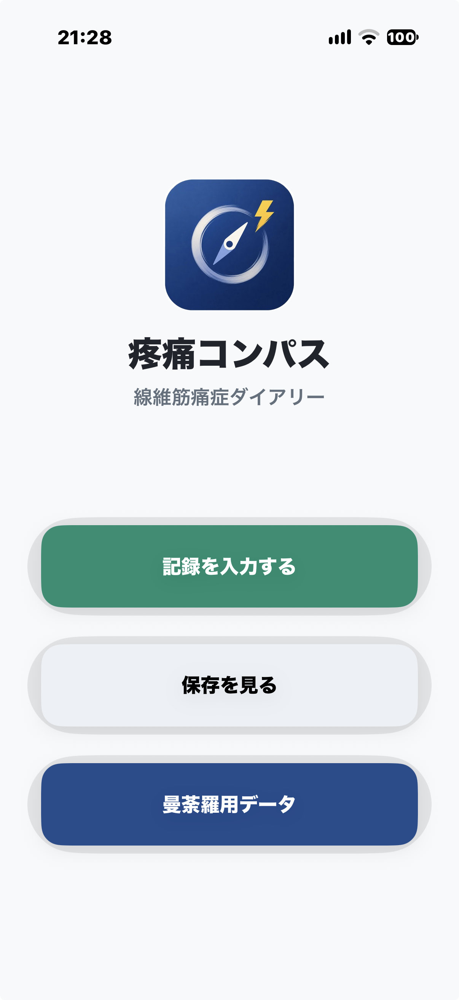

疼痛コンパスは、開発当初は線維筋痛症の日々の痛みや活動状態の変化を記録するためのアプリとして開発しております。(ver.1.0.X)
疼痛コンパスは痛みを感じる人の痛み日記です。痛みは「本人しかわからない」と言われていますが、毎日記録をとることによって、痛みの形が解りやすくなります。また、天候の変動、気温、気圧の変動、なども記録することが出来ます。
起動すると、『最初の画面』3個のボタンがあります。上段はその日の記録のためのボタンです。これを押してみてください。

『記入画面1』 まず日付と時間は自動入力です。 メモにはその日の出来事、イベントを記入できれば入れてください。痛みの度合いはプルダウンメニューになっています。
2番目は『痛み動ける状態』歩行の状態です。 『睡眠とブレインフォグ』 睡眠の問題も重要なポイントです。ブレインフォグの状態も大事です。それが何時起きるかも記録しましょう。
次へを押してください。 『記入画面2』 ここは天候の状態の記録です。最後にその日の体の動きが十分だったか記録しましょう。
Ver1.0.0ではダークモードで何もでないことがあります。アップデートしてください。 Ver1.0.1でバグフィックスしてあります。
最初のページに戻ります。この記録はここに残ります。日記の完成です。削除ボタンを押せば削除できます。
最初のページに戻ります。曼荼羅用データを押してみてください。 Ver1.0.1では疼痛と動ける状態を5X5のマスに展開します。私はこれを曼荼羅評価、曼荼羅マップと呼んでいます。 現時点では12週まで展開できます。
左上隅は痛みが少なく、日常生活でほとんど問題なく動ける状態を示します。右下隅は痛みが強く、動くことが難しい状態を示します。 曼荼羅上の位置は、その時々の体の状態によって変化します。 毎日の記録を重ねることで、痛みと動ける状態がどのように変化しているかを見ることができます。